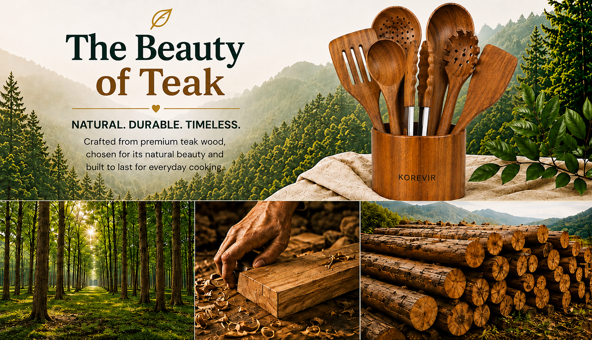

Our Story
From Our Hands to Your Table
KOREVIR brings together the finest Australian recipes and handcrafted wooden spoons. Every recipe is tested, perfected, and designed to inspire home cooks across Australia.
Our spoons are handcrafted from premium Teak wood, known for its durability, natural beauty, and resistance to moisture. Perfect for everyday cooking.
Discover Our Spoons